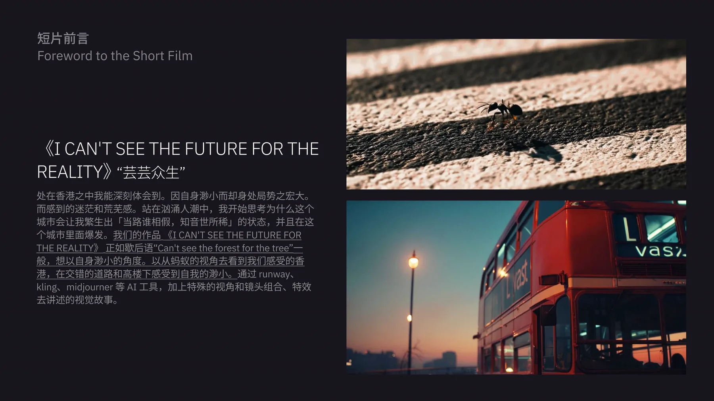
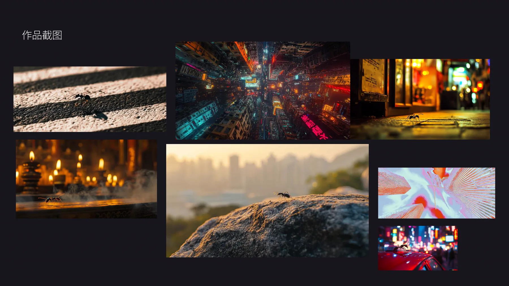
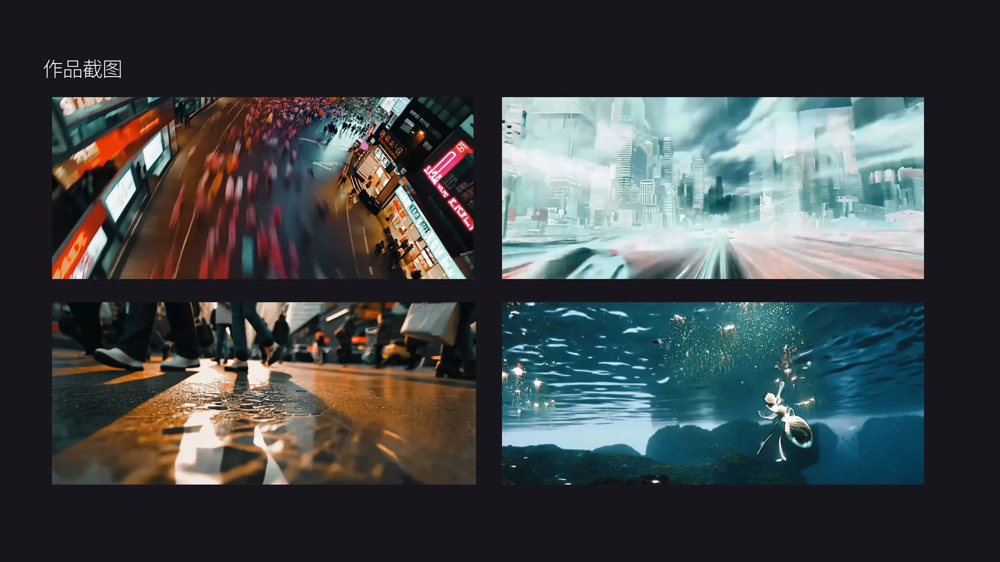
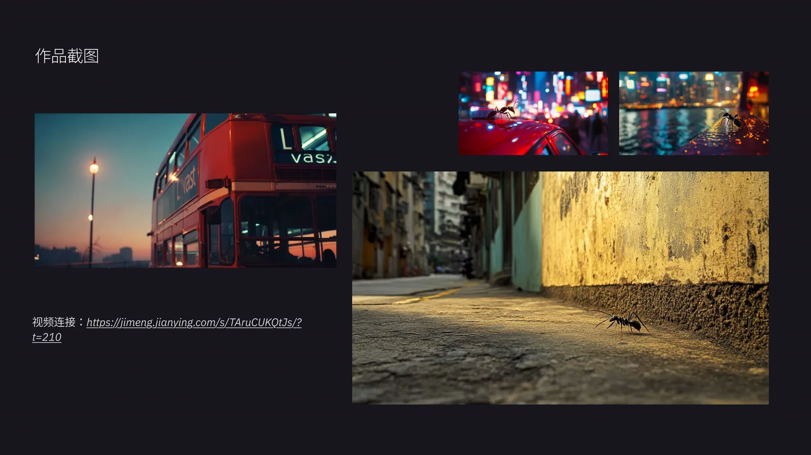

AIGC 48 小时影像创作获奖作品
香港理工大学 48 小时人工智能影像制作竞赛 · 获奖参展
 观看视频
观看视频
48 小时影像创作 · 获奖影片
原站视频/即梦项目记录
一、作品简介&呈现




视频链接：
即梦作品页即梦AI - 一站式AI创作平台jimeng.jianying.com ↗二、项目总结与解析
一、 核心概念与世界观建构 (Concept & World-Building)
项目议题：高密度城市空间下的个体异化与视觉重构
本项目探讨了在极度扩张的现代城市基建中，微观个体所面临的空间压迫与存在焦虑。香港独特的垂直城市形态提供了一个绝佳的观察样本。
作品的核心逻辑被定义为“视觉与认知的遮蔽”。在庞杂的社会运转体系中，宏大的现实景观往往会吞噬个体对未来路径的感知。为了将这一抽象的社会学概念视觉化，短片确立了极端微观的主观视点——将叙事主体设定为一只游走在混凝土森林底部的蚂蚁。通过宏观（高耸的楼宇、密集的霓虹灯矩阵）与微观（粗糙的柏油路颗粒、水洼折射）的极端尺度对比，构建出一个剥离了常规人类经验的、具有赛博荒芜特质的都市迷宫。
二、 导演视听语言拆解 (Cinematography & Directing)
视觉叙事的核心在于通过非常规物理机位来重新定义空间权力关系。
机位与空间剥夺： 放弃常规的平视或俯视，全局采用超低角度（Extreme Low Angle）的主观跟随镜头。这种机位强制观众接受微小视点，使日常的行人脚步、车轮轨迹在画面中膨胀为具象的物理威胁，从而在潜意识层面建立起强烈的空间压抑感。
时间感与剪辑律动： 视听节奏被设计为一种非线性的心理坍塌过程。影片初期的长镜头与缓慢位移意在构建客观物理世界的真实感。随后，剪辑频率与画面内部运动速度呈指数级上升，并在此过程中引入画面撕裂与数字闪烁特效。这种节奏的突变并非无意义的视觉刺激，而是为了外化主体在信息过载环境下的心理失序状态。
色彩映射： 色彩被用作心理状态的指示器。初始的冷调青灰客观还原了都市的疏离感，随着叙事推进，画面被强制注入高饱和度的迷幻光斑。这种不自然的色彩膨胀，暗示了从现实观察向主观心理迷幻的过渡。
三、 AIGC 工作流与技术管线 (Workflow & Pipeline)
在生成式AI工具介入创作时，核心挑战在于如何将工具的“随机生成”转化为“可控管线”。本项目建立了一套严密的逻辑链路以约束AI的幻觉与发散。
- 语义锚定与资产生成： 在图像生成阶段，并未依赖工具的自由发散。而是建立了一个精确的提示词词典，锁定“微距摄影”、“高对比度光影”等核心参数，确保所有静帧在美术基调上的绝对收敛与统一。
- 时空一致性控制： 针对AI视频生成中普遍存在的物体结构崩塌问题（例如多足昆虫的步态畸变），项目采取了分层控制策略。利用局部重绘与动态笔刷功能，对主体的运动轨迹进行干预，强制约束镜头平移与景深变化的物理逻辑，最大程度维持了视觉连贯性。
- 后期语义缝合： 面对AI生成的固有瑕疵，未做单纯的掩盖，而是将其纳入视觉修辞体系。生成过程中的噪点、形变被提取并加工为数字故障（Glitch）语言，结合低频声场设计，完成了原始素材从技术缺陷到叙事元素的转化。
四、 48小时限时盘 (Post-Mortem)
时间极限本质上是对工作流鲁棒性的压力测试。在极短的交付周期内，算力瓶颈与素材废片率是主要矛盾。
本次实践验证了“不对称精力分配”的有效性。在制作策略上，放弃了对每一帧物理真实度的苛求，转而将核心算力与时间投入到关键情绪转折点的镜头打磨上。对于无法通过AI完美结算的复杂运动，果断引入后期蒙太奇手法与风格化特效进行视觉欺骗。这种基于项目限制的动态决策，保证了最终视觉表达的完整度。
五、 项目总结( Project Summary)
《I CAN'T SEE THE FUTURE FOR THE REALITY》是一次在48小时极限高压下完成的AIGC视觉实验。本项目以香港的超高密度城市空间为蓝本，探讨了现代人在庞大社会机器运转下的个体异化与迷茫。
作为一次艺术与技术的综合实践，该项目不仅仅停留在对AI生成工具的堆砌，而是建立了一套从“概念推演”到“视觉翻译”，再到“后期缝合”的完整数字管线。它验证了在极度压缩的时间内，如何利用精确的提示词控制、局部动态重绘以及风格化的后期特效，将不可控的AI幻觉转化为可控的视觉资产。这种将强烈的个人表达与前沿技术工作流深度结合的能力，是我认为是本项目最大的核心价值。